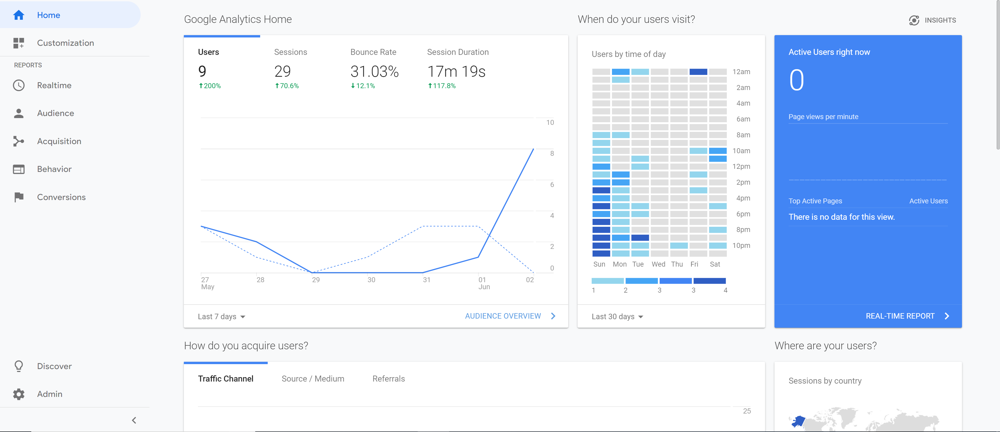
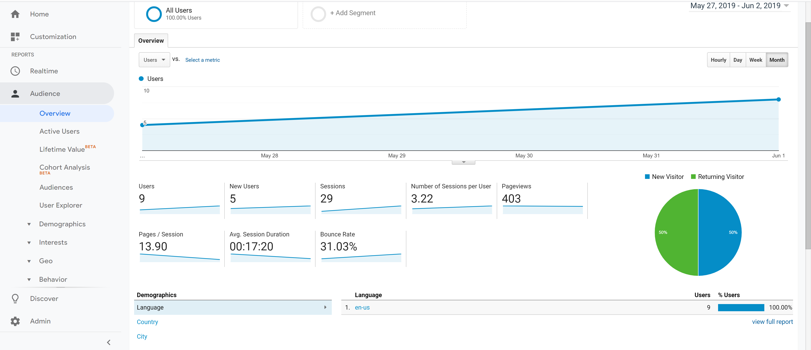
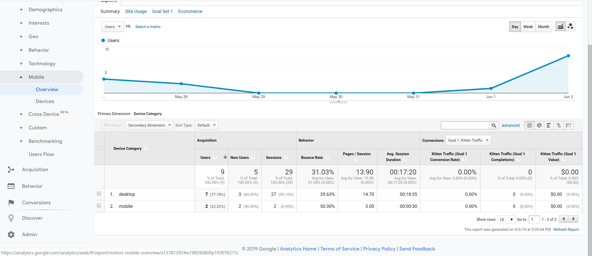
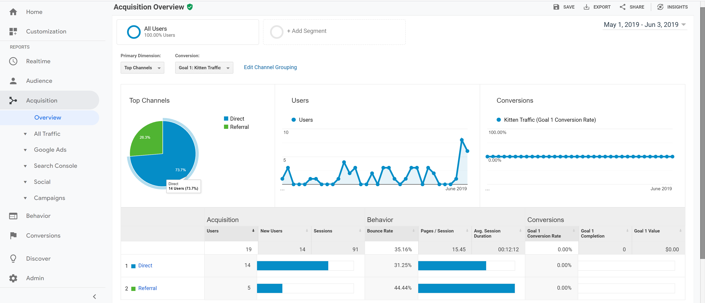
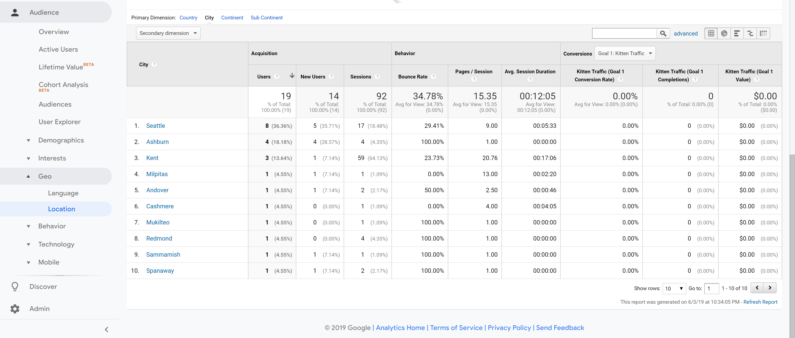

Predictions
My blog site contains my experiences with topic of Usability, User testing, Accessibility and Google Analytics. For this particular blog I am focusing on Google Analytics. After doing the initial registration for my blog site on GA, I added the tag to the main page. GA is a powerful tool and it can help educate us about the users visiting our site. Since my blog is part of the class environment, my predictions are I will be gathering data from my peers.Since this is a private environment I know the demographic, types of devices they will be using, operating systems, and locations.
Overview of Google Analytics
GA homepage is giving me a snapshot of most of the important information such as the number of users, sessions and duration, and bounce rate. This lets me know where is the user going to and how much time they are spending their.

User interaction
Audience section is very interesting and shocking at the same time. The amount of user data that is getting collected can really help you understand how to position your site for more traffic. For example my site is about Usability I can add more different types of content and not just have images. This will impact the bounce rate and sessions.

Types of devices
Mobile platform is the most popular in todays high tech environment. I was hoping to see high useage from mobile devices.

How users are getting to my blog
Current flow of traffic is direct as I am sharing the link to my site to generate data for GA. Referrals are mainly from me submitting the blog.

Conclusion
There is lots of information being collected from user interaction on the site. Having too much information can be also harmful because if we react quickly to the data results, we can make changes that might not truly solve the problem. It might create other problems such as increasing the bounce rate. In my opinion we have to create a balance and merge GA by understanding what our product is, who the target demographic is, and what are the user’s preferences.
